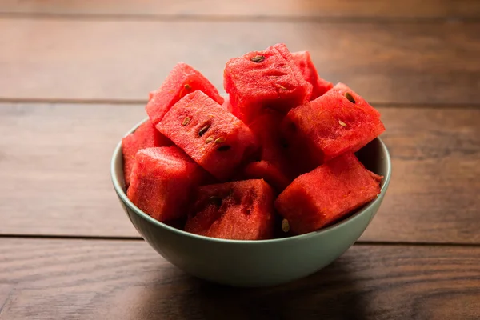
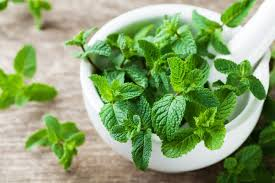
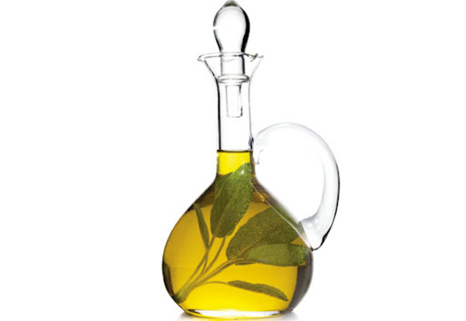
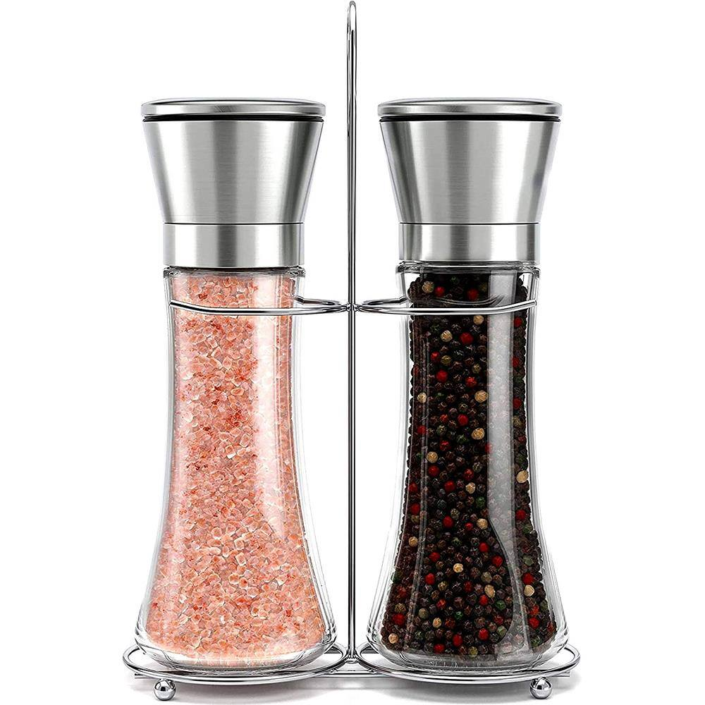
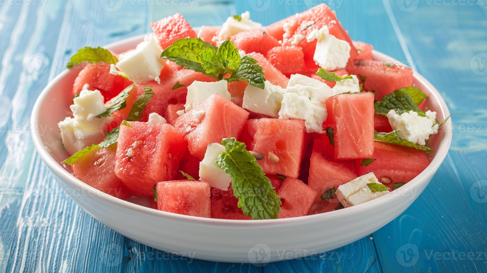

Salada de Melancia e Hortelã
A definição de hidratação. Cubos suculentos de melancia gelada finalizados com folhas de hortelã e um fio de azeite extra virgem.
Ingredientes:
-

1/2 melancia pequena (sem sementes), cortada em cubos uniformes. -

1 maço de hortelã fresca (usaremos apenas as folhas). -
 Suco de 1 limão siciliano
Suco de 1 limão siciliano
-

2 colheres de sopa de azeite de oliva extra virgem -

Flor de sal a gosto -
Opcional: Raspas de limão siciliano para finalizar.

Modo de Preparo
- A melancia deve estar muito gelada. Corte-a em cubos de aproximadamente 2cm e mantenha na geladeira até o exato momento de montar a salada.
- Em vez de picar a hortelã com faca (o que pode escurecer as bordas), prefira rasgar as folhas maiores com as mãos e deixar as menores inteiras. Isso preserva os óleos essenciais e o perfume verde.
- Em uma pequena tigela, misture o suco de limão siciliano com o azeite de oliva até formar um molho levemente opaco.
- Em uma travessa rasa e elegante, disponha os cubos de melancia. Espalhe as folhas de hortelã por cima. Regue com a emulsão de limão e azeite.
- Finalize com uma pitada de flor de sal e as raspas de limão. O sal cria um contraste maravilhoso que faz a melancia parecer ainda mais doce. Sirva imediatamente.